Podstawowe obiekty - rodzaje obiektów w Blenderze
-
Siatka (mesh)

Element siatki w Blenderze jest podstawowym składnikiem modeli 3D, składającym się z wierzchołków, krawędzi i ścian. To najczęściej używany rodzaj elementu, to na nim opiera się modelowanie 3D. Tego typu element możemy modyfikować transformując jego wierzchołki, krawędzie i ściany na różne sposoby.
-
Curve (krzywa)

Krzywe w Blenderze to biekty, które zwykle są używane po to by zostać przekształcone w siatkę na przykład przy pomocy modeyfikatora skin lub jako tor np. dla kamery lub innych poruszających się obiektów. Krzywe nie zawierają elementów siatki takich jak krawędzie czy wierzchołki, reprezentują bliżej nieokreśloną linię.
-
Light (światło)
Obiekty światła to po prostu punkty, z których rozchodzi się światło o wybranej mocy i kolorze. Różne rodzaje obiektów światła działają różnie i w zależności od danego typu punkty, z których wychodzi światło oraz kierunek czy "kształt" światła jest inny.
-
Camera (kamera)
Kamera w Blenderze 3D to obiekt, który reprezentuje punkt widzenia w trójwymiarowej przestrzeni. Można ją przemieszczać, obracać i skalować, aby ustawić widok sceny przed renderowaniem. Kontroluje się jej właściwości takie jak typ widoku (perspektywiczny, ortograficzny, panoramiczny), "głębia pola"(czyli ustawienia ostrości) i inne.
-
Text (tekst)
Obiekt tekstu to obiekt zawierający siatkę, którą można modyfikować poprzez pisanie. Możemy kontrolować wygląd tekstu zmieniając jego czcionkę, grubość, głębokość, wyrównanie, odstępy i inne.
-
Empty
Obiekt typu Empty w Blenderze 3D jest specjalnym obiektem służącym głównie jako punkt referencyjny lub kontrolny w przestrzeni 3D. Nie posiada on żadnej widocznej geometrii ani wierzchołków, więc jest niewidoczny w renderowaniu. Obiekt typu Empty może być używany do różnych celów takich jak grupowanie obiektów, bycie celem dla kamery, sterowanie efektami specjalnymi.
-
Image (obrazek)
Obiekt typu image najczęściej jest używany jako referencja, czyli obrazek pomagający podczas kształtowania modeli 3D, jest to bardzo popularne w przypadku modelowanie z blueprintów. Obiekt typu Image Reference domyślnie nie jest renderowany nawet jeśli znadjuje się w zasięgu kamery.
-
Grease Pencil
Obiekt typu Grease Pencil pozwala rysować w przestrzeni 3D. Jest on renderowany razem z resztą sceny. Jest używany do tworzenia animacji 2D. Obiekt Grease Pencil może też być automatycznie generowany dla krawędzi obiektów, które widzi kamera przez co używany jest z odpowiednimi materiałami jako obrys obiektów 3D i daje złudzenie dwuwymiarowości.